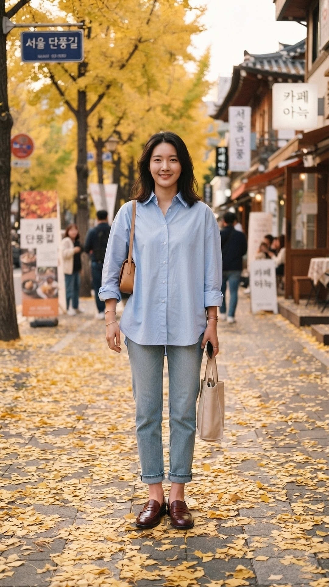
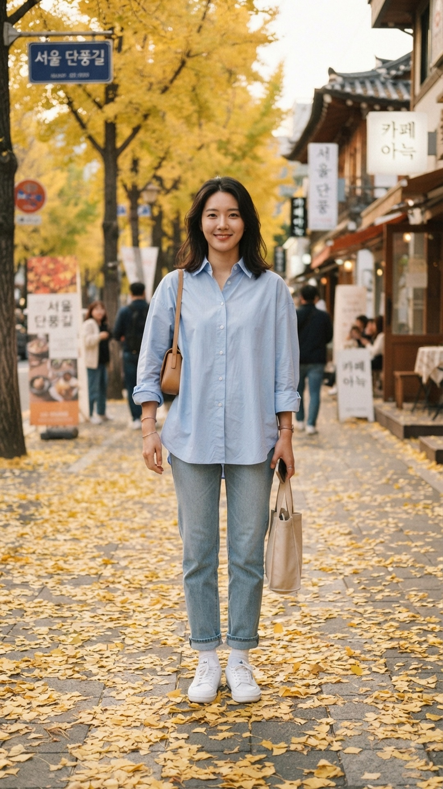

BEAUTY
letter
올가을 신발은
결국 로퍼

이럴 때
있죠?
가을 코디가 늘 똑같을 때
운동화만 신으면 너무 편해 보일 때
신발 하나만 바꿔 보세요
셔츠 + 데님 + 운동화
편하지만
늘 보던 룩
신발만 로퍼로
같은 옷, 신발만 바꿨어요
훨씬
정돈돼 보여요
1
밑단은 발목 보이게
2
가방·벨트와 색 맞추기
3
웜톤은 브라운, 쿨톤은 블랙
저장해 두고
이번 주말에 신어 보세요
@from.beautyletter